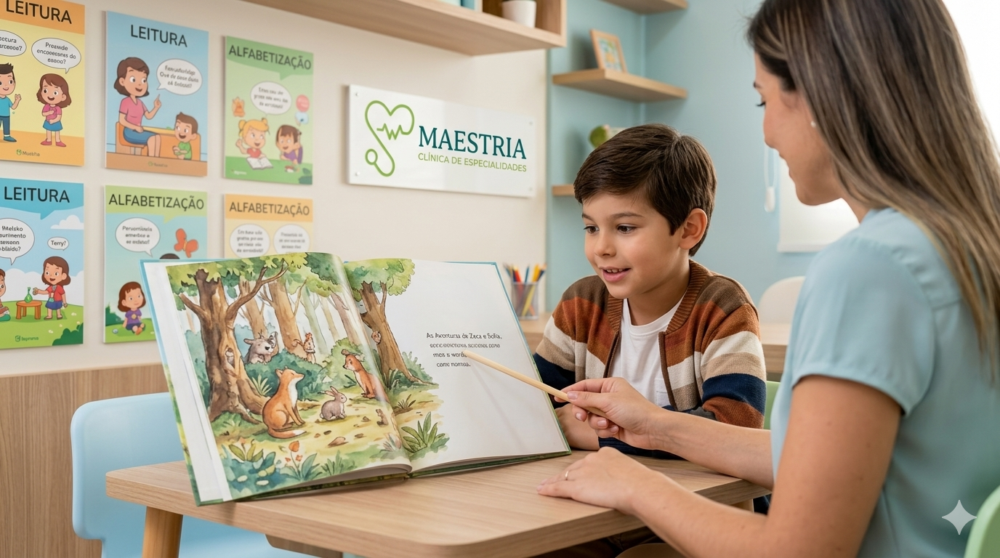
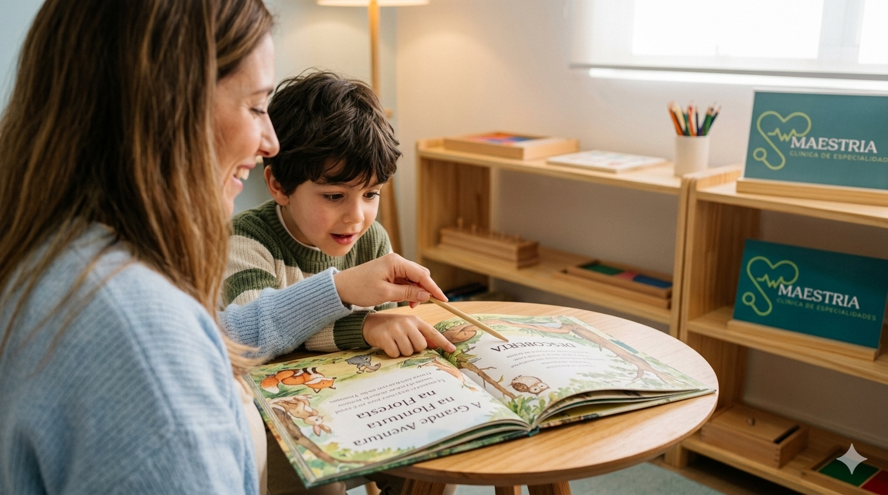
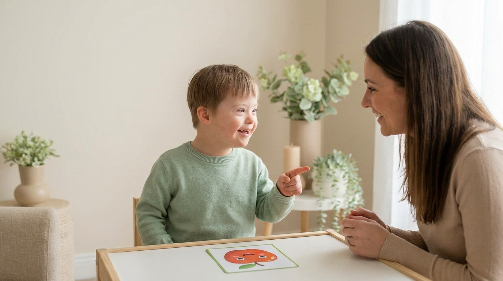
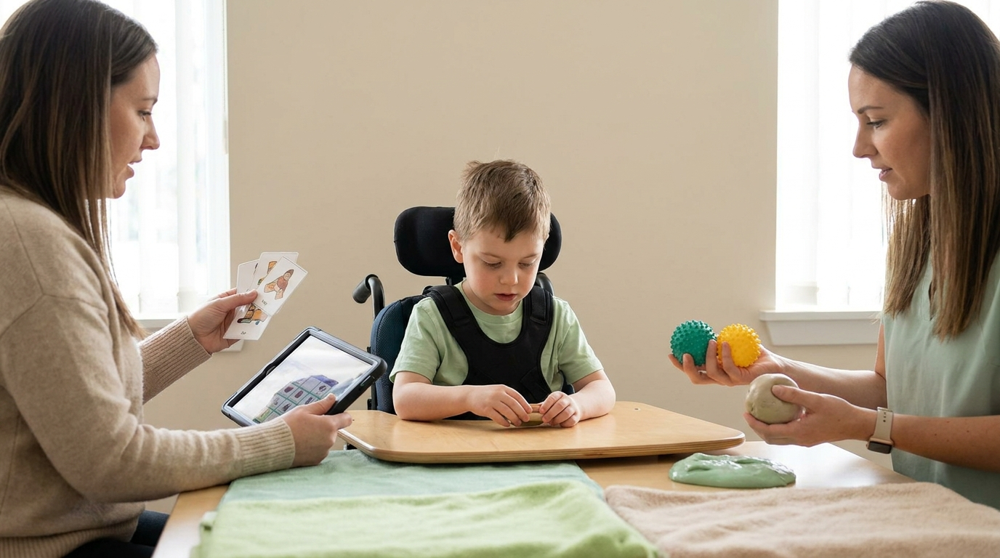
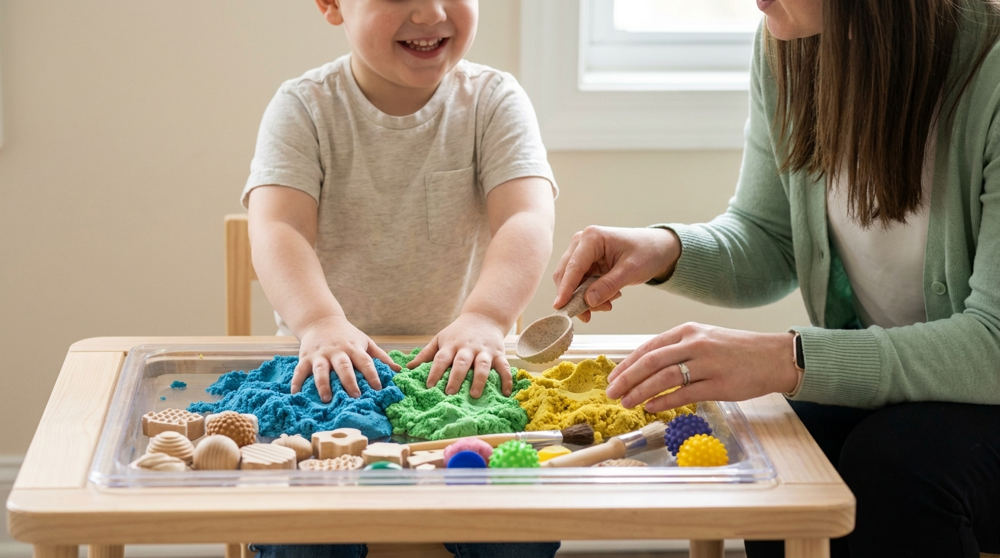

Autismo
O que mais perguntam sobre o Autismo Infantil
Respondemos as principais dúvidas das famílias sobre o Transtorno do Espectro Autista.
Conteúdo educativo para famílias sobre neurodesenvolvimento, fala, aprendizagem e terapias integradas. Artigos escritos pela Dra. Rute Santiago e equipe multidisciplinar.
Respondemos as principais dúvidas das famílias sobre o Transtorno do Espectro Autista.
Saiba identificar os sinais e o momento certo de buscar avaliação fonoaudiológica.
Esclarecemos as perguntas mais frequentes sobre o transtorno motor da fala.

Entenda o papel da Fonoaudiologia e Pedagogia no suporte à criança com dislexia.

Tire suas dúvidas sobre o transtorno específico da aprendizagem em matemática.

Identifique os sinais e saiba como ajudar seu filho com dificuldades escolares.

Entenda as causas e o que fazer quando a criança não compreende bem o que ouve.
Saiba como identificar problemas de memória infantil e buscar o suporte adequado.
Esclarecimentos sobre os distúrbios motores orais e o papel da Fonoaudiologia.
Respondemos as principais dúvidas sobre o Transtorno do Déficit de Atenção com Hiperatividade.

Informações e orientações para famílias de crianças com T21.

Onde encontrar informações confiáveis e suporte para síndromes raras.

Saiba quando e como buscar ajuda especializada para a gagueira infantil.

Conheça os benefícios da fisioterapia no desenvolvimento infantil.

Tire suas dúvidas sobre a alimentação infantil e o papel do nutricionista.
Respondemos as perguntas mais comuns sobre o atendimento fonoaudiológico.
Entenda o papel da neuropsicologia na avaliação e intervenção infantil.

Descubra como a Terapia Ocupacional pode ajudar no desenvolvimento da criança.

Saiba como o assistente terapêutico atua no suporte à criança.

Entenda o papel do acompanhante terapêutico no desenvolvimento infantil.

Conheça os benefícios das aulas em grupos reduzidos para o desenvolvimento infantil.
Saiba como a massagem relaxante pode beneficiar o desenvolvimento da criança.

Agende uma avaliação na Clínica Maestria e descubra como podemos ajudar sua família com método, acolhimento e propósito.
Fale conosco pelo WhatsApp